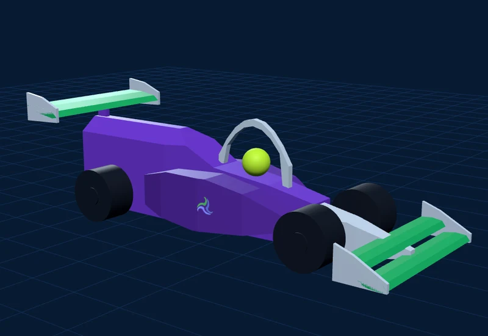

<!-- Sección "despiece". Va justo después del </header> del hero (#inicio) y antes de #manifiesto. -->
<section class="sr-despiece" id="despiece" aria-label="Despiece del monoplaza de Striker Racing, pieza por pieza">
  <div class="sr-stage">
    <div class="sr-canvas"></div>
    <header class="sr-top">
      
      <div><b>Striker Racing</b><span>Prototipo del carro · despiece</span></div>
      <span class="sr-chip"></span>
    </header>
    <div class="sr-title on">
      <h2><em>SR-26,</em> pieza por pieza.</h2>
      <p>Prototipo STEM Racing México</p>
      <small>Desliza para desarmarlo ↓</small>
    </div>
    <div class="sr-dims"></div>
    <svg class="sr-lines" aria-hidden="true"></svg>
    <div class="sr-card" aria-live="polite"></div>
    <div class="sr-table"></div>
    <div class="sr-bar">
      <div class="sr-bar-label">Carro armado</div>
      <div class="sr-track"><div class="sr-bar-fill"></div><div class="sr-ticks"></div></div>
      <span class="sr-credit">Prototipo visual · medidas tomadas del modelo 3D</span>
    </div>
    <div class="sr-fallback">
      <div><p>Tu navegador no puede mostrar el modelo 3D. Estas son las piezas del SR-26: cuerpo, pontones, nariz, alerones, halo, casco, cartucho de CO₂, llantas, ejes y guías de cable.</p></div>
    </div>
  </div>
</section>
